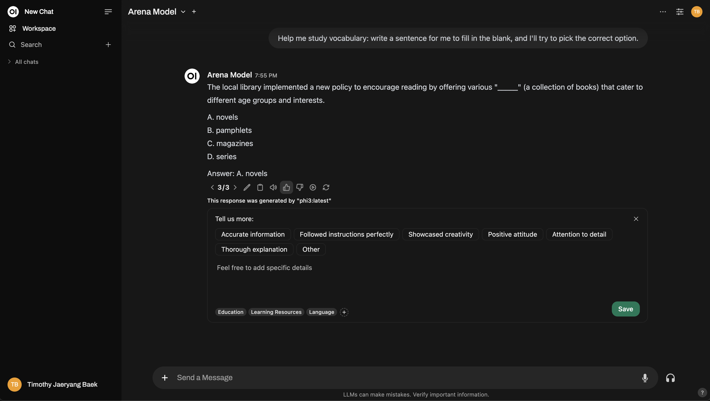
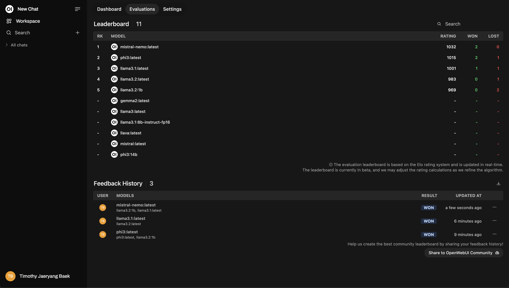

📝 Avaliação
Por que devo avaliar modelos?
EncontrarAlex, um engenheiro de aprendizado de máquina em uma empresa de médio porte. Alex sabe que existem numerosos modelos de IA por aí - gpts, lhama e muitos mais - mas qual deles funciona melhor para o trabalho em questão? Todos eles parecem impressionantes no papel, mas Alex não pode confiar em tabelas de classificação pública. Esses modelos têm um desempenho diferente, dependendo do contexto, e alguns modelos podem ter sido treinados no conjunto de dados de avaliação (sorrateira!). Além disso, a maneira como esses modelos escrevem às vezes pode parecer ...
É aí que entra o webui aberto. Isso dá a Alex e sua equipe uma maneira fácil de avaliar os modelos com base em suas necessidades reais. Sem matemática complicada. Sem levantamento pesado. Basta polegar para cima ou polegar para baixo enquanto interage com os modelos.
Tl; dr
- Por que as avaliações são importantes: Muitos modelos, mas nem todos atendem às suas necessidades específicas. As tabelas de classificação pública em geral nem sempre podem ser confiáveis.
- Como resolvê -lo: Nullcore oferece um sistema de avaliação interno. Use um polegar para cima/para baixo para avaliar as respostas dos modelos.
- O que acontece nos bastidores: As classificações ajustam sua tabela de líderes personalizadas e os instantâneos de bate-papos classificados serão usados para o ajuste futuro do modelo!
- Opções de avaliação
- Modelo de arena: Seleciona aleatoriamente modelos para você comparar.
- Interação normal: Basta conversar como de costume e avaliar as respostas.
Por que a avaliação pública não é suficiente?
- As tabelas de classificação públicas não são adaptadas aseucaso de uso específico.
- Alguns modelos são treinados nos conjuntos de dados de avaliação, afetando a justiça dos resultados.
- Um modelo pode ter um bom desempenho geral, mas seu estilo de comunicação ou respostas não se encaixa na "vibração" que você deseja.
A solução: avaliação personalizada com webui aberto
O Nullcore possui um recurso de avaliação interno que permite que você e sua equipe descubram o modelo mais adequado para suas necessidades específicas-tudo ao interagir com os modelos.
Como funciona? Simples!
- Durante as conversas, deixe um polegar para cima se quiser uma resposta ou um polegar para baixo, se não quiser. Se a mensagem tiver ummensagem de irmãos(Como uma resposta regenerada ou parte de uma comparação de modelo lado a lado), você está contribuindo para o seuTabela de classificação pessoal
- Tabelas de classificaçãosão facilmente acessíveis na seção de administrador, ajudando você a rastrear quais modelos têm melhor desempenho, de acordo com sua equipe.
Um recurso legal?Sempre que você avalia uma resposta, o sistema captura umInstantâneo dessa conversa, que mais tarde será usado para refinar os modelos ou até mesmo alimentar o treinamento de modelos futuros. (Observe, isso ainda está sendo desenvolvido!)
Duas maneiras de avaliar um modelo de IA
O Nullcore fornece duas abordagens diretas para avaliar os modelos de IA.
1. Modelo de arena
OModelo de arenaSeleciona aleatoriamente a partir de um conjunto de modelos disponíveis, certificando -se de que a avaliação seja justa e imparcial. Isso ajuda a remover uma falha potencial na comparação manual:validade ecológica- garantir que você não seja consciente ou sem saber, favorece um modelo.
Como usá -lo:
- Selecione um modelo no seletor de modelo da arena.
- Use -o como você normalmente faria, mas agora você está no "modo arena".
Para seu feedback afetar a tabela de classificação, você precisa o que é chamado demensagem de irmãos. O que é uma mensagem de irmãos? Uma mensagem de irmãos é apenas qualquer resposta alternativa gerada pela mesma consulta (pense em regenerações de mensagens ou em vários modelos gerando respostas lado a lado). Dessa forma, você está comparando respostasfrente a frente
- Dica de pontuação: Quando você levanta uma resposta, a outra diminui automaticamente o polegar. Então, esteja atento e apenas votam a mensagem que você acredita ser genuinamente a melhor!
- Depois de avaliar as respostas, você pode verificar a tabela de classificação para ver como os modelos estão se acumulando.
Aqui está uma prévia de como a interface do modelo de arena funciona:

Precisa de mais profundidade? Você pode até replicar umChatbot Arena-Style Setup!

2. Interação normal
Não há necessidade de mudar para o "Modo Arena", se você não quiser. Você pode usar o Webui aberto normalmente e classificar as respostas do modelo de IA, como faria nas operações diárias. Apenas polegar para cima/baixo das respostas do modelo, sempre que você se sentir assim. No entanto,Se você deseja que seu feedback seja usado para classificar na tabela de classificação, você precisaráTroque o modelo e interaja com um diferente. Isso garante que haja umresposta entre irmãosPara compará -lo com - apenas comparações entre dois modelos diferentes influenciarão as classificações.
Por exemplo, é assim que você pode classificar durante uma interação normal:

E aqui está um exemplo de configuração de uma comparação de vários modelos, semelhante a uma arena:

Tabela de classificação
Após a classificação, confira oTabela de classificaçãosob o painel de administração. É aqui que você verá visualmente como os modelos estão executando, classificados usando umSistema de classificação ELO(Pense no ranking de xadrez!) Você terá uma visão real de quais modelos estão realmente se destacando durante as avaliações.
Este é um layout da tabela de líderes de amostra:

Remoranização baseada em tópicos
Quando você avalia bate -papos, você podeMarque -os por tópicoPara insights mais granulares. Isso é especialmente útil se você estiver trabalhando em diferentes domínios comoAtendimento ao cliente, escrita criativa, suporte técnico, etc.
Marcação automática
Nullcore tentaTag automaticamente os chatscom base no tópico da conversa. No entanto, dependendo do modelo que você está usando, o recurso de marcação automático podeàs vezes falhamou interpretar mal a conversa. Quando isso acontece, é a melhor prática paraMarque manualmente seus bate -paposPara garantir que o feedback seja preciso.
- Como marcar manualmente: Quando você classifica uma resposta, você terá a opção de adicionar suas próprias tags com base no contexto da conversa.
Não pule isso! A marcação é super poderosa porque permite que vocêRank modelos baseados em tópicos específicos. Por exemplo, você pode querer ver qual modelo tem o melhor desempenho para responder a perguntas de suporte técnico versus consultas gerais de clientes.
Aqui está um exemplo de como a renomeamento parece:

Nota lateral: instantâneos de bate-papo para modelo de ajuste fino
Sempre que você classifica a resposta de um modelo, Nullcorecaptura um instantâneo desse bate -papo. Esses instantâneos podem eventualmente ser usados paraTune seus próprios modelos- Portanto, suas avaliações se alimentam da melhoria contínua da IA.
(Fique atento para mais atualizações sobre esse recurso, ele está sendo desenvolvido ativamente!)
Resumo
Em poucas palavras, O Sistema de Avaliação da Nullcore tem dois objetivos claros:
- Ajudá -loCompare facilmente modelos
- Por fim, encontre o modelo que combina melhor com suas necessidades individuais.
No seu coração, o sistema tem tudo a ver com fazer avaliação do modelo de IASimples, transparente e personalizávelpara cada usuário. Seja através do modelo da arena ou interação normal de bate -papo,Você está no controle total da determinação de qual modelo de IA funciona melhor para o seu caso de uso específico
Como sempre, todos os seus dados permanecem com segurança emsua instância, e nada é compartilhado, a menos que você especificamenteOptar para compartilhar comunitário. Sua privacidade e autonomia de dados são sempre priorizadas.